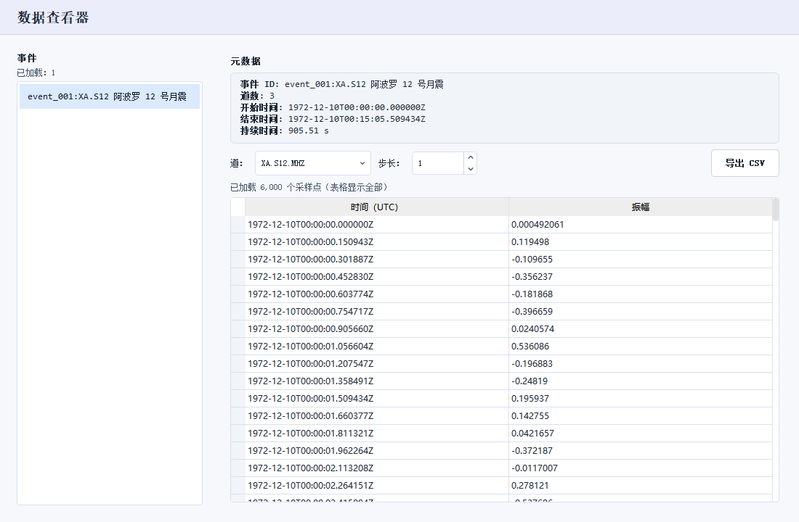

数据获取
SeisY 的波形有三个来源：在线下载、本地文件、以及阿波罗数据系统（见专门的章节）。 无论走哪条路，最终结果都是「事件列表里多一条记录」，之后的处理流程完全一致。
下载地震数据

打开方式：数据 › 下载地震数据。
参数说明
| 参数 | 说明 |
|---|---|
| 天体 | 决定默认台网和采样率。选「月球」时默认台网 XA、通道 MHZ、采样率 6.625 Hz |
| 台网 / 台站 / 通道 / 位置码 | 标准 SEED 四元组。台站可以留空表示该台网全部台站 |
| 地震开始时间 / 结束时间 | 请求的时间窗。跨天请求建议分次下载，单次过大会被服务端截断 |
示例按钮
面板中部的六个示例按钮会一次性填好整套参数，是最不容易出错的起点：
IU.ANMO 宽频带/IU.TARA 全球台—— 地球数据XB.ELYSE 火星 InSight—— 火震数据XA.S12 阿波罗 12 号月震—— 月球数据G.CAN 地震台—— 单台站示例跨网络搜索 ANMO—— 只按台站名搜索，不限台网
台站地图
面板底部的「台站地图」可以展开，用地图方式选台站，适合不知道该用哪个台站代码的时候。
操作步骤
- 点一个示例按钮，或手工填四元组与时间窗；
- 点 开始下载。下载在后台线程进行，可以继续操作界面；
- 下载完成后，事件列表自动多出一条记录，状态栏「事件列表数量」加一；
- 在事件列表里单击这条记录，波形才会画到画布上。
下载失败先看运行信息
网络问题、参数不被服务端接受、时间窗内没有数据，这三种情况的报错文案不同。
右上角「运行信息」里有完整原因，比弹窗里那一行字详细得多。
打开本地文件
文件 › 导入文件，选择 .mseed / .sac / .seed 等格式。
也可以直接在左侧文件浏览器里双击文件。
导入时 SeisY 会按文件内容自动识别台网与通道，不需要手工指定。
数据查看器

打开方式：数据 › 数据查看器（需先在事件列表里选中事件）。
这个面板用来核对原始采样值，不画图，只列数：
| 区域 | 作用 |
|---|---|
| 事件 | 左侧列出已载入的事件，点一下切换 |
| 元数据 | 事件 ID、道数、起止时间、持续时间 |
| 道 / 步长 | 选择具体某一道；步长大于 1 时按间隔抽样显示，避免大文件卡顿 |
| 表格 | 时间（UTC）与振幅两列。振幅是原始值，未做任何处理 |
| 导出 CSV | 把当前道按当前步长导出，便于在 Excel / Python 里复核 |
什么时候该用它
怀疑「数据本身有问题」而不是「处理有问题」时。比如波形看着像一条直线，
用数据查看器一看采样值全是同一个数，就能确定是数据源的问题，不必再去调滤波参数。
相关命令
偏好命令行的用户可以在 AI 助手或 CLI 里直接执行：
| 命令 | 作用 |
|---|---|
download |
按当前参数下载波形 |
load <路径> |
导入本地文件 |
events |
列出事件列表 |
use <序号> |
切换当前事件 |